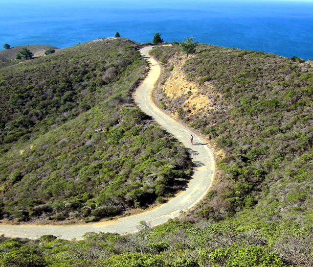

Low-Key Hillclimbs Aggregate Results:
Montara Mountain
generated Fri Nov 4 10:34:14 PDT 2016
|
|  |
| 2013 week 8: Lisa Penzel climbs to the top woman's time (Cara Coburn) |
Results are listed here from the Low-Key archives, sorted by time for each climb. Some years start and/or finish time differ slightly, such as
with Kings Mt Road where after 1995 the start moved from Entrance Way to Greer.
Results are ranked by time first, score second.
Score is calculated using a simple percent-of-median-speed
formula, with time adjustments for division. These scores will generally differ from those calculated in the results for that particular year, since
the scoring scheme has evolved. Tandems are split between 1998, when they were counted as single participants, and other years, when the individual
riders have been counted separately
Results for Men
| rank | time | score | rider | cat | team | year | week | code |
|---|
| 1 | 24:09 | 138.757 | David Collet | 40+ | Pen Velo/Pomodoro | 2013 | 8 | |
| 2 | 24:14 | 138.298 | Keith Hillier | 25+ | Sr's & Mr's of No Mercy | 2013 | 8 | |
| 3 | 26:22 | 127.108 | Carl Nielson | 50+ | Sr's & Mr's of No Mercy | 2013 | 8 | |
| 4 | 26:32 | 126.331 | Rob Nast | 50+ | | 2013 | 8 | |
| 5 | 27:00 | 124.097 | Bill Laddish | 40+ | Team CVC | 2013 | 8 | |
| 6 | 27:35 | 121.511 | Stefano Profumo | 35+ | Bike Trip/Symantec | 2013 | 8 | |
| 7 | 27:52 | 120.257 | Paul McKenzie | 55+ | Sr's & Mr's of No Mercy | 2013 | 8 | |
| 8 | 29:13 | 114.732 | Miro Miklos | 30+ | | 2013 | 8 | |
| 9 | 29:20 | 114.268 | Daryl Spano | 45+ | San Jose Bike Club | 2013 | 8 | |
| 10 | 29:46 | 112.600 | Alexander Komlik | 45+ | San Jose Bike Club | 2013 | 8 | |
| 11 | 30:06 | 111.362 | Ben Weir | 30+ | Western Wheelers | 2013 | 8 | |
| 12 | 30:20 | 110.496 | Ross Tinline | 50+ | Pen Velo/Pomodoro | 2013 | 8 | |
| 13 | 30:36 | 109.541 | Brandon Smith | 25+ | Team CVC | 2013 | 8 | |
| 14 | 30:46 | 108.954 | John Koslosky | 45+ | Team CVC | 2013 | 8 | |
| 15 | 30:50 | 108.676 | Bruce Gardner | 40+ | Sr's & Mr's of No Mercy | 2013 | 8 | |
| 16 | 31:32 | 106.261 | Todd Studenicka | 45+ | San Jose Bike Club | 2013 | 8 | |
| 17 | 32:04 | 104.539 | Lucas Pereira | 40+ | Google | 2013 | 8 | |
| 18 | 32:09 | 104.265 | Mark King | 45+ | Equipe Flamme Rouge | 2013 | 8 | |
| 19 | 33:22 | 100.436 | Paul Chuck | 55+ | Sr's & Mr's of No Mercy | 2013 | 8 | |
| 20 | 33:25 | 100.286 | Bart Niechwiej | 35+ | Google | 2013 | 8 | |
| 21 | 33:29 | 100.077 | David Stockwell | 55+ | San Jose Bike Club | 2013 | 8 | |
| 22 | 33:31 | 100.000 | Peter Ingram | 55+ | Steely Man | 2013 | 8 | |
| 23 | 33:31 | 99.988 | Kevin Comerford | 35+ | Sr's & Mr's of No Mercy | 2013 | 8 | |
| 24 | 33:43 | 99.384 | Ramon Periquet | 50+ | Team CVC | 2013 | 8 | |
| 25 | 33:44 | 99.351 | Bob Scott | Male 40+ | Pen Velo/Pomodoro | 2013 | 8 | |
| 26 | 33:59 | 98.619 | Daniel Connelly | 45+ | Low-Key | 2013 | 8 | |
| 27 | 34:10 | 98.105 | Daniel Aminzade | 30+ | Google | 2013 | 8 | |
| 28 | 34:46 | 96.411 | Michael Busha | 30+ | Diablo | 2013 | 8 | |
| 29 | 35:36 | 94.158 | Doug Reynolds | 60+ | NightRiders | 2013 | 8 | |
| 30 | 37:04 | 90.427 | Jeff Shute | 35+ | Google | 2013 | 8 | |
| 31 | 38:42 | 86.605 | Frank Paysen | 50+ | autonomous masochist | 2013 | 8 | |
| 32 | 38:50 | 86.306 | Richard Contreras | | Rhus | 2013 | 8 | |
| 33 | 39:12 | 85.489 | Franz Kelsch | 65+ | NightRiders | 2013 | 8 | |
| 34 | 39:22 | 85.128 | Boris Foelsch | Weak But Willing | Sr's & Mr's of No Mercy | 2013 | 8 | |
| 35 | 40:35 | 82.589 | Stephen Fong | 0 | CyclePath Racing | 2013 | 8 | |
| 36 | 40:49 | 82.103 | Frank Drobot | 60+ | Team Djament | 2013 | 8 | |
| 37 | 43:04 | 77.826 | Trevor Collet | Junior 13 | Pen Velo/Pomodoro | 2013 | 8 | |
| 38 | 43:36 | 76.884 | Mark Powers | 55+ | Pen Velo/Pomodoro | 2013 | 8 | |
| 39 | 44:07 | 75.978 | Stephen Wilcox | | | 2013 | 8 | |
| 40 | 50:35 | 66.259 | Alec Proudfoot | 50+ | DaSH | 2013 | 8 | |
Results for Female Runner
| rank | time | score | rider | cat | team | year | week | code |
|---|
| 1 | 44:45 | 90.346 | Casey Roberts | Runner | Team CVC | 2013 | 8 | |
Results for Women
| rank | time | score | rider | cat | team | year | week | code |
|---|
| 1 | 36:12 | 111.685 | Lisa Penzel | 45+ | The Brown Zone | 2013 | 8 | |
| 2 | 37:32 | 107.707 | Janet Martinez/Gardner | 45+ | Sr's & Mr's of No Mercy | 2013 | 8 | |
| 3 | 41:36 | 97.206 | Trish Pacheco | 45+ | Sr's & Mr's of No Mercy | 2013 | 8 | |
| 4 | 42:52 | 94.337 | Holly Harris | Women 50+ | Sr's & Mr's of No Mercy | 2013 | 8 | |
| 5 | 42:54 | 94.245 | Kate Bergeron | 40+ | Diablo | 2013 | 8 | |
Results for Male Runner
| rank | time | score | rider | cat | team | year | week | code |
|---|
| 1 | 27:53 | 120.186 | Gary Gellin | | Sr's & Mr's of No Mercy | 2013 | 8 | |
| 2 | 30:33 | 109.731 | Sean Handel | | | 2013 | 8 | |
| 3 | 38:51 | 86.285 | Kyle Rudolph | Runner? | Team CVC | 2013 | 8 | |
| 4 | 39:01 | 85.894 | Stephen Wilcox Runner | | | 2013 | 8 | |
| 5 | 55:35 | 60.301 | Bill Bushnell | Hors | Low-Key | 2013 | 8 | |